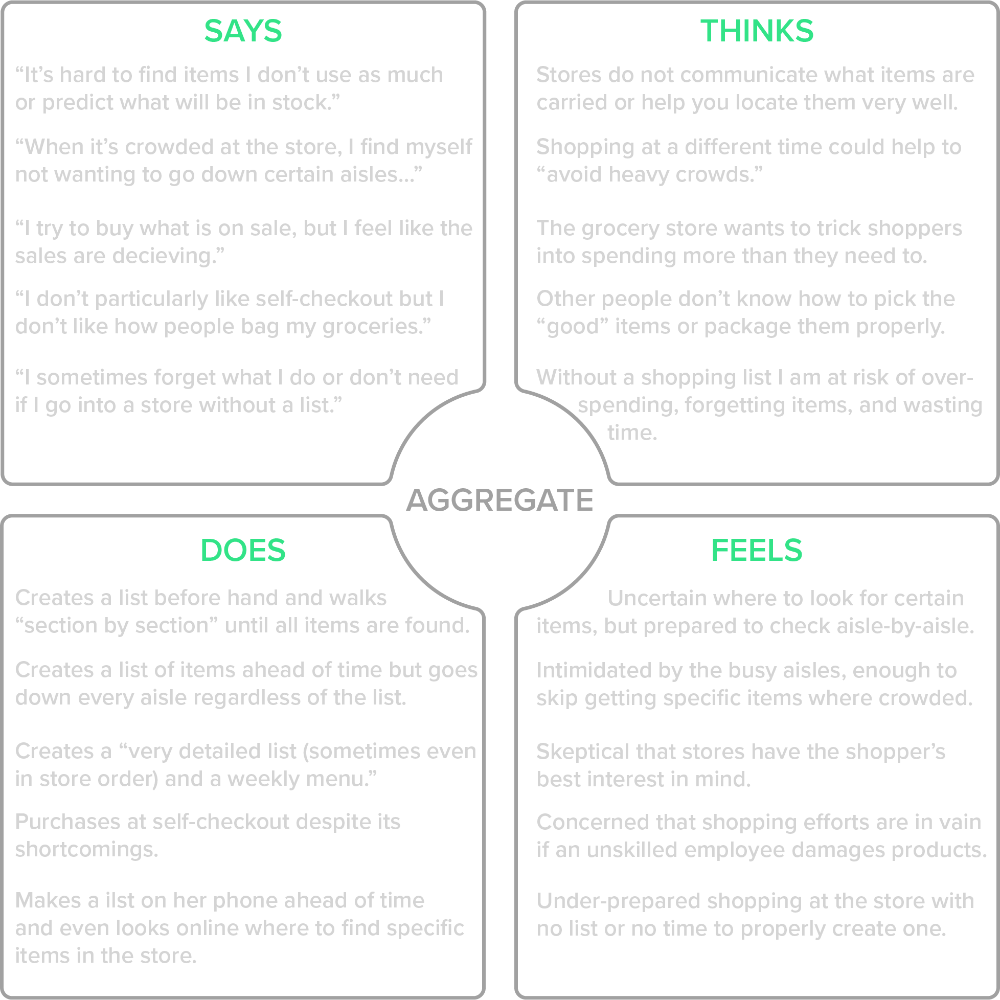
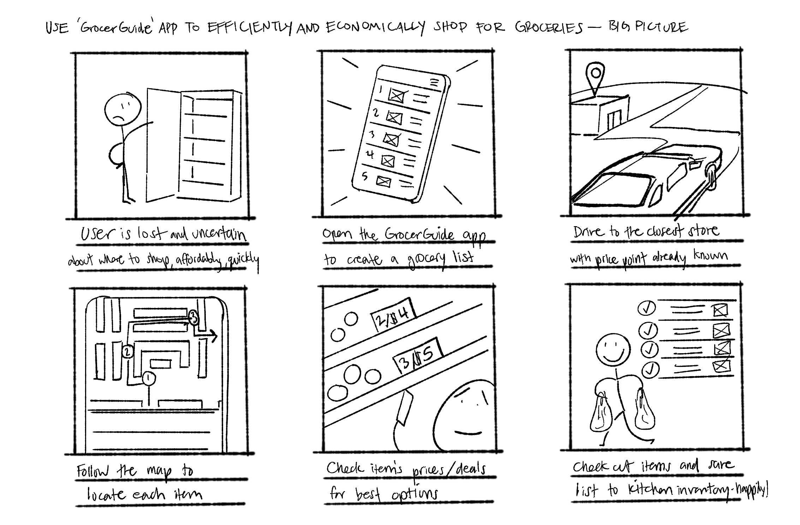
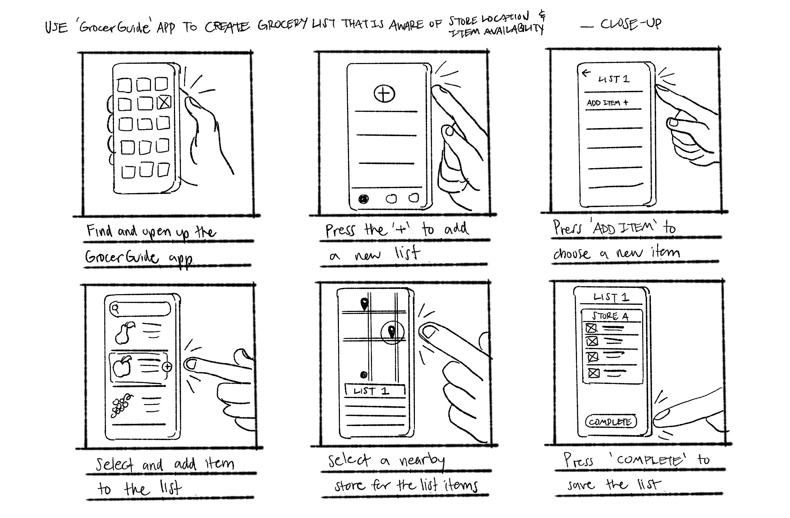
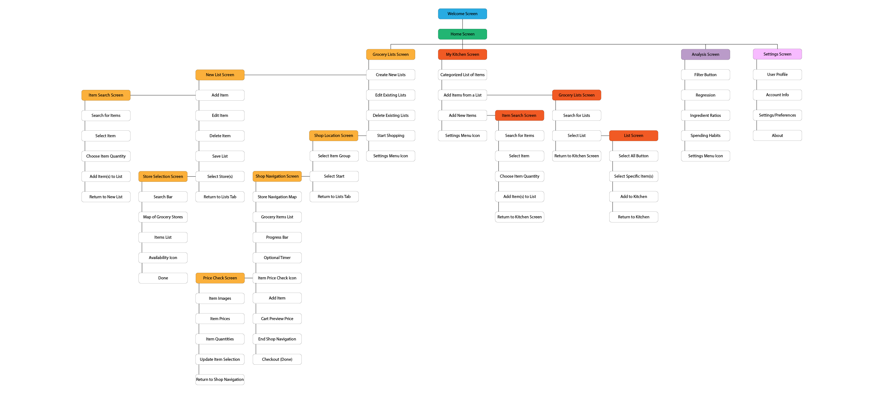

Project Overview
There is a disconnect between our digital grocery lists and the stores we shop in. Customers often don’t know which store has the best prices, where to find their items in-store, or if they’re overspending at checkout.
Grocerguide is a mobile app designed to help grocery shoppers save time and money by comparing prices before visiting the store and easily navigating the aisles for a more efficient shopping experience.
Timeline
September 2024 - October 2024
Understanding the User
In what ways can a mobile app simplify and improve the grocery shopping experience?
I began by designing a survey targeted at a small, curated group within my network. Since I personally know these individuals and their grocery shopping habits, I opted to forego a preliminary screener survey. Here are the results from 11 unique participants:
Survey Results
54.5% of participants were between the ages of 26 - 35.
72.7% of participants live in a suburban environment.
91% of participants frequent 2 or more grocery stores in order to complete their list.
100% of participants state that they use some form of list while grocery shopping.
Pain Points
Store Selection
Grocery shopping often means visiting multiple stores without knowing if one will have everything you need.
In-store Navigation
Finding specific items while shopping can be time-consuming
Price Transparency
Tracking prices is challenging, leaving shoppers uncertain about their total at checkout.
Based on the key challenges identified, I needed to gain deeper insights into the user’s thought process. To achieve this, I created an empathy map to visualize their emotions, needs, and pain points, helping me better understand their experiences and ensure the solution is aligned with their perspectives.
Empathy Map
With a deeper understanding of how users think, feel, and act, I could create a persona—a fictional yet accurate representation of my target users. This persona encapsulates their goals, challenges, and behaviors, serving as a guide to design solutions that address their specific needs and enhance their overall experience.
Persona
Martin Evans
Age: 36
Location: Naperville, IL
Family: Married, 2 kids
Education: MBA, Finance
Occupation: Economics Professor
"As a father of two young kids, I rely heavily on my calendar to make it through the week. If I'm not at work or driving my kids to their next activity, I'm most likely at the grocery store restocking on food. If there's one thing I don't want to do, it's to spend all of my free time in the store and make inefficient purchases because I am in a rush."
Goals
• To maintain time for personal interests while raising kids.
• To save as much money as possible for the future of his family.
• To ensure that the food his family eats is safe and healthy.
Frustrations
• His lack of time makes it difficult to keep up with his personal goals.
• He is always uncertain what stores may offer similar items cheaper.
• He feels uncomfortable when deciding between similar items in-store.
Now that we’ve identified our persona, Martin, we can step into his shoes to better understand his experience. By visualizing Martin's user journey, we can map out his actions, challenges, and emotions at each step.
User Journey Map
Creates shopping list
Tasks:
• Gathers family preferences
• Devises a weekly meal plan
• Checks kitchen for existing ingredients
• Creates a shopping list
Feels: Hungry
Opportunities: Kitchen inventory, Saved meal ideas
Locates nearest store(s)
Tasks:
• Opens up a maps mobile app
• Checks distance & travel times
• Considers additional errands
Feels: Lethargic
Opportunities: Better wayfinding
Determines best store(s)
Tasks:
• Checks the store(s) hours
• Searches store(s) sites for specific item availability
• Compares item pricing at a couple stores
Feels: Uncertain
Opportunities: Store item comparisons
Collects list items
Tasks:
• Chooses a direction to walk in the store
• Visits each store section based on list item
• Selects items based on brand, price, and best deals
Feels: Insecure
Opportunities: Better wayfinding, Better labels
Purchases items
Tasks:
• Determines checkout line
• Waits in line to pay
• Moves each item to be scanned
• Quickly glance at checkout price and pay
Feels: Apprehensive
Opportunities: Pre-checkout estimated cart price
Returns home
Tasks:
• Packs groceries into car
• Drives directly home
• Carries groceries inside home
• Organizes each item within the kitchen
Feels: Relieved
Opportunities: Food storage tips
Now that we understand the user, the task can be more accurately defined. This sets the stage for the creation of initial design ideas.
Defining the Task
Problem Statement:
Martin, a busy parent, needs a more efficient way to grocery shop, as it's all too easy for him to lose valuable time and money during the process.
Hypothesis:
If Martin downloads the Grocerguide app, he can can shop smarter, saving precious time and money on groceries.
Starting the Design
My initial ideas for how the GrocerGuide app could address Martin's key challenges include: keeping an inventory of his home kitchen, creating simple grocery lists, cross-checking info from multiple grocery stores' inventories, finding his groceries using an internal store map and wayfinding, pre-calculating item pricing before checkout, and saving his shopping trip info for later analysis.
Those are a LOT of different ideas and features... but that's the point at this stage - to get out as many ideas as possible!
Rapid Sketching & Ideation
Crazy 8's is a useful exercise where you fill a piece of paper with 8 ideas, one per minute.

Quick storyboards provide various perspectives, from the big picture to close-up details, on how GrocerGuide would be utilized.
 With a clearer idea of what I was creating, I developed a sitemap to organize my approach to designing the app screens.
Sitemap
Keeping the structure of the app in mind, I created initial drawings of the user interface. I used red stars indicate features that stood out to me, then took my favorite design into Figma to digitize it!
Low Fidelity Wireframes
.png)
.png)
.png)
.png)
With the first iteration of views created in Figma, I connected them with simple interactions to put them to the test in a usability study... Needless to say, there were problems!
You're welcome to see it for yourself: Grocerguide LoFi Prototype
Prototype + Usability Study

Refining the Design
Missing menus, confirmation screens, visual queues, and more... Luckily, I performed a moderated usability study with this first prototype so I could recieve better feedback before they wanted to give up!
While there were many obvious missing pieces in the LoFi prototype, my biggest takeaway was that I was over-reaching with the core purpose of Grocerguide. Multiple users shared that the only time they would even consider using their phone for grocery shopping would be while planning the trip- and maybe to glance at their list in-store.
Insights + Hi-Fi Prototype
It took until the usability test for me to realize how wrong I had everything! The interface was missing obvious pieces, the purpose was unclear- I was trying to make the app a one-stop-shop rather than solving an actual problem.
Going Forward
To continue this project I would like to dive deeper into gathering data from grocery store websites and performing another usability study for the hi-fi
This project showed me x y z through challenges...
Some wins and aspirations